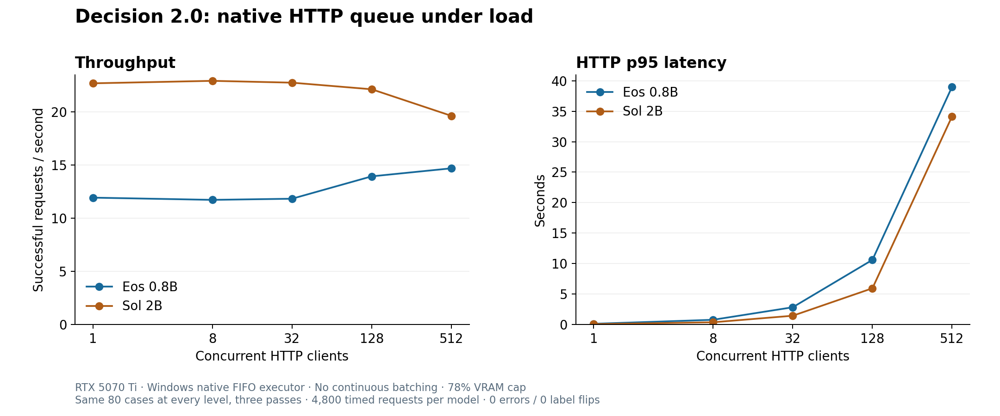

Decision 2.0: concurrency and compatibility
Updated 2026-10-03T13:09:30.029062+00:00
Local RTX 5070 Ti 16 GB with the standard 78% VRAM allocation cap; Windows CUDA/Transformers/FLA with reference causal-convolution fallback; localhost HTTP; native publisher models with one FIFO GPU executor, no continuous batching.
Status: decision2-eos-08b: complete, decision2-sol-2b: complete

Editable SVG · PNG
Direct vLLM compatibility
Official vLLM 0.30.0 Linux container. Both probes use the complete pinned Sol 2B package with the published decision head, pooling runner and trusted model code. Engine construction alone would not prove System One parity.
| Model implementation | Result | Evidence |
|---|
| auto | unsupported | ValueError: Argument input_ids not found in the forward method of <class 'transformers_modules._23cbe9f96dde4a7e1e6a238d576128bf73c5b09e.4616ee1d85e89849.modeling_decision2.Decision2Model'> Engine log |
| transformers | unsupported | ValueError: Argument input_ids not found in the forward method of <class 'transformers_modules._23cbe9f96dde4a7e1e6a238d576128bf73c5b09e.4616ee1d85e89849.modeling_decision2.Decision2Model'> Engine log |
Concurrent native HTTP requests
80 frozen short-message cases; all shapes warmed before a separate serial reference. Three passes per level, at least max(80, 2 × concurrency) requests per pass, rounded to complete workload cycles so every level has the same case mix. Persistent HTTP connections, no retries. One decision per request. HTTP wall time includes the service queue. Repeated inputs test stability and do not enlarge the accuracy sample.
| Model | Concurrency | Requests | Successful req/s | p50 ms | p95 ms | p99 ms | Errors | Label flips | Max probability Δ |
|---|
| decision2-eos-08b | 1 | 240 | 11.9 | 79.7 | 112.4 | 120.8 | 0 | 0 | 0 |
| decision2-eos-08b | 8 | 240 | 11.7 | 657.1 | 770.9 | 792.8 | 0 | 0 | 0 |
| decision2-eos-08b | 32 | 240 | 11.8 | 2609.0 | 2827.5 | 2931.8 | 0 | 0 | 0 |
| decision2-eos-08b | 128 | 960 | 13.9 | 8258.2 | 10606.1 | 10666.0 | 0 | 0 | 0 |
| decision2-eos-08b | 512 | 3120 | 14.7 | 33200.7 | 39020.0 | 39368.8 | 0 | 0 | 0 |
| decision2-sol-2b | 1 | 240 | 22.7 | 42.7 | 53.1 | 57.7 | 0 | 0 | 0 |
| decision2-sol-2b | 8 | 240 | 22.9 | 346.2 | 361.0 | 368.9 | 0 | 0 | 0 |
| decision2-sol-2b | 32 | 240 | 22.7 | 1387.1 | 1436.4 | 1441.8 | 0 | 0 | 0 |
| decision2-sol-2b | 128 | 960 | 22.1 | 5618.7 | 5942.0 | 5961.9 | 0 | 0 | 0 |
| decision2-sol-2b | 512 | 3120 | 19.6 | 22801.3 | 34161.3 | 34526.7 | 0 | 0 | 0 |
Questions in one native request
One state with repeated named questions; each shape warmed, three timed passes, context sharing disabled. Capacity and consistency diagnostic. The 512-question stage does not represent 512 simultaneous GPU forwards.
| Model | Questions | Median ms | Median decisions/s | Failed passes | Label flips | Max probability Δ | Errors |
|---|
| decision2-eos-08b | 1 | 64.6 | 15.5 | 0 | 0 | 0 | |
| decision2-eos-08b | 4 | 70.9 | 56.4 | 0 | 0 | 4.45e-05 | |
| decision2-eos-08b | 16 | 117.3 | 136.3 | 0 | 0 | 1.91e-05 | |
| decision2-eos-08b | 64 | 502.7 | 127.3 | 0 | 0 | 1.91e-05 | |
| decision2-eos-08b | 128 | 979.1 | 130.7 | 0 | 0 | 1.91e-05 | |
| decision2-eos-08b | 512 | 244.5 | — | 3 | — | — | Failure detailsOutOfMemoryError: CUDA out of memory. Tried to allocate 1.24 GiB. GPU 0 has a total capacity of 15.92 GiB of which 2.29 GiB is free. 12.42 GiB allowed; Of the allocated memory 9.73 GiB is allocated by PyTorch, and 1.53 GiB is reserved by PyTorch but unallocated. If reserved but unallocated memory is large try setting PYTORCH_CUDA_ALLOC_CONF=expandable_segments:True to avoid fragmentation. See documentation for Memory Management (https://pytorch.org/docs/stable/notes/cuda.html#environment-variables) |
| decision2-sol-2b | 1 | 50.7 | 19.7 | 0 | 0 | 0 | |
| decision2-sol-2b | 4 | 54.8 | 73.0 | 0 | 0 | 0.000194 | |
| decision2-sol-2b | 16 | 178.0 | 89.9 | 0 | 0 | 0.0018 | |
| decision2-sol-2b | 64 | 763.5 | 83.8 | 0 | 0 | 0.0018 | |
| decision2-sol-2b | 128 | 1497.8 | 85.5 | 0 | 0 | 0.0018 | |
| decision2-sol-2b | 512 | 422.3 | — | 3 | — | — | Failure detailsOutOfMemoryError: CUDA out of memory. Tried to allocate 1.22 GiB. GPU 0 has a total capacity of 15.92 GiB of which 1.24 GiB is free. 12.42 GiB allowed; Of the allocated memory 12.29 GiB is allocated by PyTorch, and 50.78 MiB is reserved by PyTorch but unallocated. If reserved but unallocated memory is large try setting PYTORCH_CUDA_ALLOC_CONF=expandable_segments:True to avoid fragmentation. See documentation for Memory Management (https://pytorch.org/docs/stable/notes/cuda.html#environment-variables); OutOfMemoryError: CUDA out of memory. Tried to allocate 1.22 GiB. GPU 0 has a total capacity of 15.92 GiB of which 1.27 GiB is free. 12.42 GiB allowed; Of the allocated memory 12.29 GiB is allocated by PyTorch, and 50.78 MiB is reserved by PyTorch but unallocated. If reserved but unallocated memory is large try setting PYTORCH_CUDA_ALLOC_CONF=expandable_segments:True to avoid fragmentation. See documentation for Memory Management (https://pytorch.org/docs/stable/notes/cuda.html#environment-variables) |
The older publisher explanation distinguishes SDK submission capacity from throughput and simultaneous forwards. Decision 2.0 cards publish single-request latency. This serialized native baseline measures local queueing and does not establish the publisher's maximum throughput or a vLLM scaling result.
Protocol · Saved results · Execution status · Standard accuracy benchmark